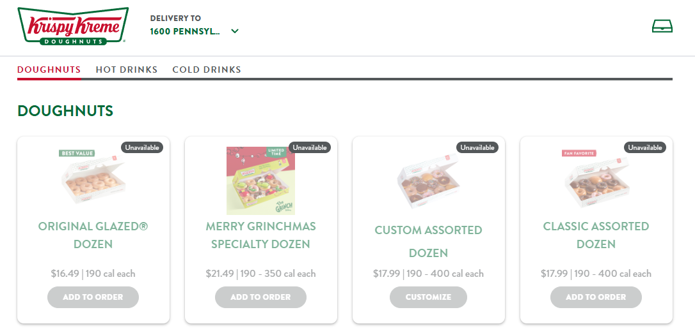

Writing.

Satire · December 2024
Krispy Kreme customers face threat of hypoglycemia after cyber-attack disrupts online orders
A satirical report from Nutsider Magazine.
Read article ↗The Men
of my Village
of my Village
Short story · January 2024
The Men of my Village
A story set in the village of Natria.
Read story ↗